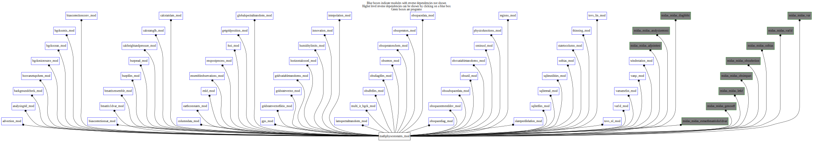

Dependency Diagrams:
No Direct Dependency
 Reverse Dependency Diagram¶
Description
MODULE MathPhysConstants_mod (prefix=’mpc’ category=’8. Low-level utilities and constants’)
- Purpose
To supply mathematical and physical constants in a universal, reliable fashion.
Quick access
- Variables
mpc_ai_r4,mpc_ai_r8,mpc_astronomical_unit_r4,mpc_astronomical_unit_r8,mpc_avogadro_r4,mpc_avogadro_r8,mpc_aw_r4,mpc_aw_r8,mpc_bi_r4,mpc_bi_r8,mpc_boltzmann_r4,mpc_boltzmann_r8,mpc_bw_r4,mpc_bw_r8,mpc_cp_dry_air_r4,mpc_cp_dry_air_r8,mpc_cp_ice_r4,mpc_cp_ice_r8,mpc_cp_vapour_r4,mpc_cp_vapour_r8,mpc_critical_richardson_r4,mpc_critical_richardson_r8,mpc_cv_dry_air_r4,mpc_cv_dry_air_r8,mpc_cv_vapour_r4,mpc_cv_vapour_r8,mpc_degrees_per_radian_r4,mpc_degrees_per_radian_r8,mpc_delta_r4,mpc_delta_r8,mpc_density_water_r4,mpc_density_water_r8,mpc_eps1_r4,mpc_eps1_r8,mpc_eps2_r4,mpc_eps2_r8,mpc_heat_condens_water_r4,mpc_heat_condens_water_r8,mpc_heat_fusion_water_r4,mpc_heat_fusion_water_r8,mpc_heat_subl_water_r4,mpc_heat_subl_water_r8,mpc_k_c_degree_offset_r4,mpc_k_c_degree_offset_r8,mpc_kappa_r4,mpc_kappa_r8,mpc_karman_r4,mpc_karman_r8,mpc_knots_per_m_per_s_r4,mpc_knots_per_m_per_s_r8,mpc_m_per_s_per_knot_r4,mpc_m_per_s_per_knot_r8,mpc_maximum_es_r4,mpc_maximum_es_r8,mpc_maximum_vis_r4,mpc_maximum_vis_r8,mpc_mbar_per_pa_r4,mpc_mbar_per_pa_r8,mpc_mean_anomaly_r4,mpc_mean_anomaly_r8,mpc_minimum_ch_r4,mpc_minimum_ch_r8,mpc_minimum_hu_r4,mpc_minimum_hu_r8,mpc_minimum_pm_r4,mpc_minimum_pm_r8,mpc_minimum_pr_r4,mpc_minimum_pr_r8,mpc_minimum_vis_r4,mpc_minimum_vis_r8,mpc_missingvalue_int,mpc_missingvalue_r4,mpc_missingvalue_r8,mpc_molar_mass_ch4_r4,mpc_molar_mass_ch4_r8,mpc_molar_mass_co2_r4,mpc_molar_mass_co2_r8,mpc_molar_mass_co_r4,mpc_molar_mass_co_r8,mpc_molar_mass_dry_air_r4,mpc_molar_mass_dry_air_r8,mpc_molar_mass_hcho_r4,mpc_molar_mass_hcho_r8,mpc_molar_mass_n2o_r4,mpc_molar_mass_n2o_r8,mpc_molar_mass_nh3_r4,mpc_molar_mass_nh3_r8,mpc_molar_mass_no2_r4,mpc_molar_mass_no2_r8,mpc_molar_mass_no_r4,mpc_molar_mass_no_r8,mpc_molar_mass_o3_r4,mpc_molar_mass_o3_r8,mpc_molar_mass_so2_r4,mpc_molar_mass_so2_r8,mpc_molar_mass_vapour_r4,mpc_molar_mass_vapour_r8,mpc_pa_per_mbar_r4,mpc_pa_per_mbar_r8,mpc_pi_r4,mpc_pi_r8,mpc_planck_r4,mpc_planck_r8,mpc_radians_per_degree_r4,mpc_radians_per_degree_r8,mpc_rgas_dry_air_r4,mpc_rgas_dry_air_r8,mpc_rgas_ideal_r4,mpc_rgas_ideal_r8,mpc_rgas_vapour_r4,mpc_rgas_vapour_r8,mpc_schumann_newell_lapse_rate_r4,mpc_schumann_newell_lapse_rate_r8,mpc_sidereal_year_r4,mpc_sidereal_year_r8,mpc_slp_r4,mpc_slp_r8,mpc_solar_constant_r4,mpc_solar_constant_r8,mpc_speed_of_light_r4,mpc_speed_of_light_r8,mpc_stefan_boltzmann_r4,mpc_stefan_boltzmann_r8,mpc_t1s_r4,mpc_t1s_r8,mpc_t2s_r4,mpc_t2s_r8,mpc_t_ice_r4,mpc_t_ice_r8,mpc_triple_point_r4,mpc_triple_point_r8- Routines
Variables
- mathphysconstants_mod/mpc_ai_r4 [real,public]¶
- mathphysconstants_mod/mpc_ai_r8 [real,public]¶
- mathphysconstants_mod/mpc_astronomical_unit_r4 [real,public]¶
m - half g. axis
- mathphysconstants_mod/mpc_astronomical_unit_r8 [real,public]¶
m - half g. axis
- mathphysconstants_mod/mpc_avogadro_r4 [real,public/parameter]¶
mol-1 - Avogadro’s number
- mathphysconstants_mod/mpc_avogadro_r8 [real,public/parameter]¶
mol-1 - Avogadro’s number
- mathphysconstants_mod/mpc_aw_r4 [real,public]¶
- mathphysconstants_mod/mpc_aw_r8 [real,public]¶
- mathphysconstants_mod/mpc_bi_r4 [real,public]¶
- mathphysconstants_mod/mpc_bi_r8 [real,public]¶
- mathphysconstants_mod/mpc_boltzmann_r4 [real,public/parameter]¶
J/K - Boltzmann constant
- mathphysconstants_mod/mpc_boltzmann_r8 [real,public/parameter]¶
J/K - Boltzmann constant
- mathphysconstants_mod/mpc_bw_r4 [real,public]¶
- mathphysconstants_mod/mpc_bw_r8 [real,public]¶
- mathphysconstants_mod/mpc_cp_dry_air_r4 [real,public]¶
J kg-1 K-1 - sp. heat(P) of dry air
- mathphysconstants_mod/mpc_cp_dry_air_r8 [real,public]¶
J kg-1 K-1 - sp. heat(P) of dry air
- mathphysconstants_mod/mpc_cp_ice_r4 [real,public]¶
J kg-1 K-1 - sp. heat(P?) of ice
- mathphysconstants_mod/mpc_cp_ice_r8 [real,public]¶
J kg-1 K-1 - sp. heat(P?) of ice
- mathphysconstants_mod/mpc_cp_vapour_r4 [real,public]¶
J kg-1 K-1 - sp. heat(P) of water vapour
- mathphysconstants_mod/mpc_cp_vapour_r8 [real,public]¶
J kg-1 K-1 - sp. heat(P) of water vapour
- mathphysconstants_mod/mpc_critical_richardson_r4 [real,public]¶
(unitless) -critical Richardson number
- mathphysconstants_mod/mpc_critical_richardson_r8 [real,public]¶
(unitless) -critical Richardson number
- mathphysconstants_mod/mpc_cv_dry_air_r4 [real,public]¶
J kg-1 K-1 - sp. heat(V) of dry air
- mathphysconstants_mod/mpc_cv_dry_air_r8 [real,public]¶
J kg-1 K-1 - sp. heat(V) of dry air
- mathphysconstants_mod/mpc_cv_vapour_r4 [real,public]¶
J kg-1 K-1 - sp. heat(V) of water vapour
- mathphysconstants_mod/mpc_cv_vapour_r8 [real,public]¶
J kg-1 K-1 - sp. heat(V) of water vapour
- mathphysconstants_mod/mpc_degrees_per_radian_r4 [real,public/parameter]¶
deg/rad - conversion: radians to degrees
- mathphysconstants_mod/mpc_degrees_per_radian_r8 [real,public/parameter]¶
deg/rad - conversion: radians to degrees
- mathphysconstants_mod/mpc_delta_r4 [real,public]¶
(unitless) - 1/eps1 - 1 (unitless) u2013 [R(vapour) / R(air)] - 1
- mathphysconstants_mod/mpc_delta_r8 [real,public]¶
(unitless) - 1/eps1 - 1 (unitless) u2013 [R(vapour) / R(air)] - 1
- mathphysconstants_mod/mpc_density_water_r4 [real,public]¶
kg m-3 - density of (liquid) water
- mathphysconstants_mod/mpc_density_water_r8 [real,public]¶
kg m-3 - density of (liquid) water
- mathphysconstants_mod/mpc_eps1_r4 [real,public]¶
(unitless) - R(air) / R(vapour)
- mathphysconstants_mod/mpc_eps1_r8 [real,public]¶
(unitless) - R(air) / R(vapour)
- mathphysconstants_mod/mpc_eps2_r4 [real,public]¶
(unitless) - 1 - eps1
- mathphysconstants_mod/mpc_eps2_r8 [real,public]¶
(unitless) - 1 - eps1
- mathphysconstants_mod/mpc_heat_condens_water_r4 [real,public]¶
J/kg - heat of condensation at 0C (water)
- mathphysconstants_mod/mpc_heat_condens_water_r8 [real,public]¶
J/kg - heat of condensation at 0C (water)
- mathphysconstants_mod/mpc_heat_fusion_water_r4 [real,public]¶
J/kg - heat of fusion (water)
- mathphysconstants_mod/mpc_heat_fusion_water_r8 [real,public]¶
J/kg - heat of fusion (water)
- mathphysconstants_mod/mpc_heat_subl_water_r4 [real,public]¶
J/kg - heat of sublimation (water)
- mathphysconstants_mod/mpc_heat_subl_water_r8 [real,public]¶
J/kg - heat of sublimation (water)
- mathphysconstants_mod/mpc_k_c_degree_offset_r4 [real,public/parameter]¶
K - offset between degrees K and C
- mathphysconstants_mod/mpc_k_c_degree_offset_r8 [real,public/parameter]¶
K - offset between degrees K and C
- mathphysconstants_mod/mpc_kappa_r4 [real,public]¶
(unitless) - for dry air: Rgas / Cp
- mathphysconstants_mod/mpc_kappa_r8 [real,public]¶
(unitless) - for dry air: Rgas / Cp
- mathphysconstants_mod/mpc_karman_r4 [real,public]¶
(unitless) - von Karman constant
- mathphysconstants_mod/mpc_karman_r8 [real,public]¶
(unitless) - von Karman constant
- mathphysconstants_mod/mpc_knots_per_m_per_s_r4 [real,public/parameter]¶
knots/(m/s) - conversion: m/s to knots
- mathphysconstants_mod/mpc_knots_per_m_per_s_r8 [real,public/parameter]¶
knots/(m/s) - conversion: m/s to knots
- mathphysconstants_mod/mpc_m_per_s_per_knot_r4 [real,public/parameter]¶
(m/s)/knot - conversion: knots to m/s
- mathphysconstants_mod/mpc_m_per_s_per_knot_r8 [real,public/parameter]¶
(m/s)/knot - conversion: knots to m/s
- mathphysconstants_mod/mpc_maximum_es_r4 [real,public]¶
- mathphysconstants_mod/mpc_maximum_es_r8 [real,public]¶
- mathphysconstants_mod/mpc_maximum_vis_r4 [real,public]¶
15km
- mathphysconstants_mod/mpc_maximum_vis_r8 [real,public]¶
15km
- mathphysconstants_mod/mpc_mbar_per_pa_r4 [real,public/parameter]¶
mbar/Pa - conversion: Pascals to mbars
- mathphysconstants_mod/mpc_mbar_per_pa_r8 [real,public/parameter]¶
mbar/Pa - conversion: Pascals to mbars
- mathphysconstants_mod/mpc_mean_anomaly_r4 [real,public]¶
(unitless) - mean anomaly
- mathphysconstants_mod/mpc_mean_anomaly_r8 [real,public]¶
(unitless) - mean anomaly
- mathphysconstants_mod/mpc_minimum_ch_r4 [real,public]¶
0.1 micrograms/kg (for constituents)
- mathphysconstants_mod/mpc_minimum_ch_r8 [real,public]¶
0.1 micrograms/kg (for constituents)
- mathphysconstants_mod/mpc_minimum_hu_r4 [real,public]¶
- mathphysconstants_mod/mpc_minimum_hu_r8 [real,public]¶
- mathphysconstants_mod/mpc_minimum_pm_r4 [real,public]¶
0 micrograms/m^3 (for particulate matter)
- mathphysconstants_mod/mpc_minimum_pm_r8 [real,public]¶
0 micrograms/m^3 (for particulate matter)
- mathphysconstants_mod/mpc_minimum_pr_r4 [real,public]¶
0.1 mm/h = 0.0001 m/h
- mathphysconstants_mod/mpc_minimum_pr_r8 [real,public]¶
0.1 mm/h = 0.0001 m/h
- mathphysconstants_mod/mpc_minimum_vis_r4 [real,public]¶
- mathphysconstants_mod/mpc_minimum_vis_r8 [real,public]¶
- mathphysconstants_mod/mpc_missingvalue_int [integer,public/parameter]¶
- mathphysconstants_mod/mpc_missingvalue_r4 [real,public/parameter]¶
- mathphysconstants_mod/mpc_missingvalue_r8 [real,public/parameter]¶
- mathphysconstants_mod/mpc_molar_mass_ch4_r4 [real,public]¶
g/mol - methane molar mass
- mathphysconstants_mod/mpc_molar_mass_ch4_r8 [real,public]¶
g/mol - methane molar mass
- mathphysconstants_mod/mpc_molar_mass_co2_r4 [real,public]¶
g/mol - CO2 molar mass
- mathphysconstants_mod/mpc_molar_mass_co2_r8 [real,public]¶
g/mol - CO2 molar mass
- mathphysconstants_mod/mpc_molar_mass_co_r4 [real,public]¶
g/mol - CO molar mass
- mathphysconstants_mod/mpc_molar_mass_co_r8 [real,public]¶
g/mol - CO molar mass
- mathphysconstants_mod/mpc_molar_mass_dry_air_r4 [real,public]¶
g/mol - dry-air molar mass
- mathphysconstants_mod/mpc_molar_mass_dry_air_r8 [real,public]¶
g/mol - dry-air molar mass
- mathphysconstants_mod/mpc_molar_mass_hcho_r4 [real,public]¶
g/mol - Formaldehyde molar mass
- mathphysconstants_mod/mpc_molar_mass_hcho_r8 [real,public]¶
g/mol - Formaldehyde molar mass
- mathphysconstants_mod/mpc_molar_mass_n2o_r4 [real,public]¶
g/mol - N2O molar mass
- mathphysconstants_mod/mpc_molar_mass_n2o_r8 [real,public]¶
g/mol - N2O molar mass
- mathphysconstants_mod/mpc_molar_mass_nh3_r4 [real,public]¶
g/mol - NH3 molar mass
- mathphysconstants_mod/mpc_molar_mass_nh3_r8 [real,public]¶
g/mol - NH3 molar mass
- mathphysconstants_mod/mpc_molar_mass_no2_r4 [real,public]¶
g/mol - NO2 molar mass
- mathphysconstants_mod/mpc_molar_mass_no2_r8 [real,public]¶
g/mol - NO2 molar mass
- mathphysconstants_mod/mpc_molar_mass_no_r4 [real,public]¶
g/mol - NO molar mass
- mathphysconstants_mod/mpc_molar_mass_no_r8 [real,public]¶
g/mol - NO molar mass
- mathphysconstants_mod/mpc_molar_mass_o3_r4 [real,public]¶
g/mol - ozone molar mass
- mathphysconstants_mod/mpc_molar_mass_o3_r8 [real,public]¶
g/mol - ozone molar mass
- mathphysconstants_mod/mpc_molar_mass_so2_r4 [real,public]¶
g/mol - SO2 molar mass
- mathphysconstants_mod/mpc_molar_mass_so2_r8 [real,public]¶
g/mol - SO2 molar mass
- mathphysconstants_mod/mpc_molar_mass_vapour_r4 [real,public]¶
g/mol - water-vapour molar mass
- mathphysconstants_mod/mpc_molar_mass_vapour_r8 [real,public]¶
g/mol - water-vapour molar mass
- mathphysconstants_mod/mpc_pa_per_mbar_r4 [real,public/parameter]¶
Pa/mbar - conversion: mbars to Pascals
- mathphysconstants_mod/mpc_pa_per_mbar_r8 [real,public/parameter]¶
Pa/mbar - conversion: mbars to Pascals
- mathphysconstants_mod/mpc_pi_r4 [real,public/parameter]¶
(unitless)
- mathphysconstants_mod/mpc_pi_r8 [real,public/parameter]¶
(unitless)
- mathphysconstants_mod/mpc_planck_r4 [real,public/parameter]¶
J/s - Planck’s constant
- mathphysconstants_mod/mpc_planck_r8 [real,public/parameter]¶
J/s - Planck’s constant
- mathphysconstants_mod/mpc_radians_per_degree_r4 [real,public/parameter]¶
rad/deg - conversion: degrees to radians
- mathphysconstants_mod/mpc_radians_per_degree_r8 [real,public/parameter]¶
rad/deg - conversion: degrees to radians
- mathphysconstants_mod/mpc_rgas_dry_air_r4 [real,public]¶
J kg-1 K-1 - gas constant, dry air
- mathphysconstants_mod/mpc_rgas_dry_air_r8 [real,public]¶
J kg-1 K-1 - gas constant, dry air
- mathphysconstants_mod/mpc_rgas_ideal_r4 [real,public]¶
J mol-1 K-1 - ideal-gas constant
- mathphysconstants_mod/mpc_rgas_ideal_r8 [real,public]¶
J mol-1 K-1 - ideal-gas constant
- mathphysconstants_mod/mpc_rgas_vapour_r4 [real,public]¶
J kg-1 K-1 - gas constant, water vapour
- mathphysconstants_mod/mpc_rgas_vapour_r8 [real,public]¶
J kg-1 K-1 - gas constant, water vapour
- mathphysconstants_mod/mpc_schumann_newell_lapse_rate_r4 [real,public]¶
K s2 m-2 - Schuman-Newell lapse rate
- mathphysconstants_mod/mpc_schumann_newell_lapse_rate_r8 [real,public]¶
K s2 m-2 - Schuman-Newell lapse rate
- mathphysconstants_mod/mpc_sidereal_year_r4 [real,public]¶
s - sidereal year
- mathphysconstants_mod/mpc_sidereal_year_r8 [real,public]¶
s - sidereal year
- mathphysconstants_mod/mpc_slp_r4 [real,public]¶
- mathphysconstants_mod/mpc_slp_r8 [real,public]¶
- mathphysconstants_mod/mpc_solar_constant_r4 [real,public]¶
W/m2 - solar constant
- mathphysconstants_mod/mpc_solar_constant_r8 [real,public]¶
W/m2 - solar constant
- mathphysconstants_mod/mpc_speed_of_light_r4 [real,public/parameter]¶
m/s - speed of light
- mathphysconstants_mod/mpc_speed_of_light_r8 [real,public/parameter]¶
m/s - speed of light
- mathphysconstants_mod/mpc_stefan_boltzmann_r4 [real,public]¶
W m-2 K-4 - Stefan-Boltzmann constant
- mathphysconstants_mod/mpc_stefan_boltzmann_r8 [real,public]¶
W m-2 K-4 - Stefan-Boltzmann constant
- mathphysconstants_mod/mpc_t1s_r4 [real,public]¶
K
- mathphysconstants_mod/mpc_t1s_r8 [real,public]¶
K
- mathphysconstants_mod/mpc_t2s_r4 [real,public]¶
K
- mathphysconstants_mod/mpc_t2s_r8 [real,public]¶
K
- mathphysconstants_mod/mpc_t_ice_r4 [real,public]¶
K - ice temperature in the atmosphere
- mathphysconstants_mod/mpc_t_ice_r8 [real,public]¶
K - ice temperature in the atmosphere
- mathphysconstants_mod/mpc_triple_point_r4 [real,public]¶
K - triple point of water
- mathphysconstants_mod/mpc_triple_point_r8 [real,public]¶
K - triple point of water
Subroutines and functions
- subroutine mathphysconstants_mod/mpc_setvalue(name, var_r4, var_r8, value)¶
- Purpose
To provide a means to change a (non-parameter) value
- Arguments
name [character ]
var_r4 [real ]
var_r8 [real ]
value [real ]
- subroutine mathphysconstants_mod/mpc_printconstants(kulout)¶
- Purpose
To print all of the constants that are provided by this module. The intent is to make it clear in a program listing which values were used.
- Arguments
kulout [integer ,in] :: unit number for printing
- Called from
csg_setup(),omf_ominusf(),omf_ominusfens(),midas_sstbias,midas_adjointtest,midas_analysiserroroi,midas_diaghbht,midas_gencoeff,midas_obsimpact,midas_obsselection,midas_var,midas_var1d
{kind=link}